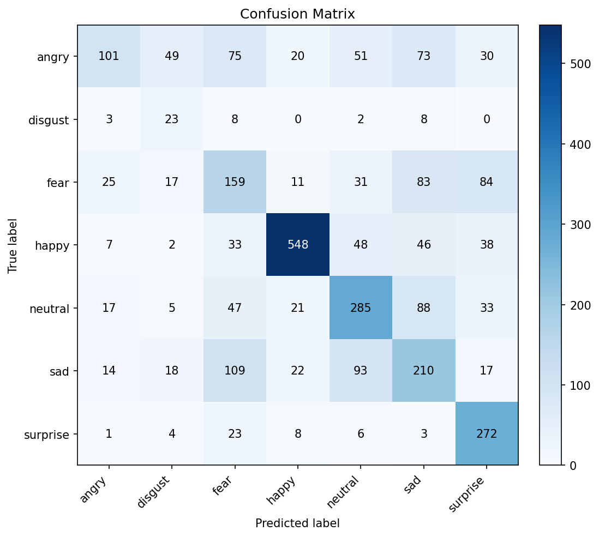

A real-time ML pipeline that detects faces in live video and predicts each face's age group and emotion with confidence-scored overlays.
This project implements an end-to-end ML inference pipeline for face detection, age-group classification, and facial-expression recognition with both offline evaluation and live webcam deployment. For face localization on still images, we first built a sliding-window detector that vectorizes fixed-size patches, normalizes pixels to 0,1, and applies a logistic regression classifier trained via gradient descent on a balanced (downsampled) face/non-face set, using sigmoid probabilities and a threshold to place bounding boxes; for improved robustness and real-time throughput, the final integrated system uses an OpenCV Haar cascade to produce face ROIs per frame. Age prediction is trained on FairFace as an 8-class classifier (0-2, 3-9, 10-19, 20-29, 30-39, 40-49, 50-59, 60+), with 128x128 RGB inputs, a custom loader with augmentation (horizontal flips, light rotation, color jitter), and class-imbalance handling via inverse-frequency weighting and a WeightedRandomSampler. The age network follows an EfficientNet-Lite-style design using MBConv (inverted bottleneck) blocks with depthwise separable convolutions, Squeeze-and-Excitation attention, and SiLU activations (32-channel stem → 4 MBConv macro-stages → 1280-channel head → global average pooling/dropout → fully connected classifier), trained end-to-end (no pretrained weights) with class-weighted cross-entropy, Adam (lr=1e-4), and a warmup + cosine annealing schedule. Emotion recognition is trained on FER-2013 (35,887 grayscale 48x48 images; 7 classes: angry, disgust, fear, happy, neutral, sad, surprise) using a compact CNN composed of repeated Conv2D→BatchNorm→ReLU blocks with MaxPool and Dropout, followed by global pooling and a dense classifier; inputs are standardized by grayscale conversion, resizing to 48x48, normalization to -1,1, and random flips, and training uses softmax + cross-entropy, AdamW (lr=3e-4), batch size 128, up to 20 epochs with early stopping (patience=7) plus class weighting to address rare expressions. In the combined demo, each detected face is cropped and preprocessed per model (grayscale/48x48 for emotion; RGB/128x128 for age), then the system renders the top-probability predictions and confidence scores alongside bounding boxes for one or multiple faces in the live feed.
